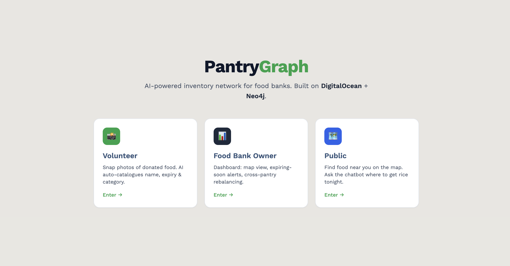

AI-powered inventory network for food banks — built on DigitalOcean + Neo4j

Point a camera at donated food items. AI auto-detects product name, expiry date, and barcode — cataloguing inventory in seconds.
Try it live →Map view of all pantries, expiring-soon alerts, cross-pantry rebalancing suggestions, and an ops chatbot for routing questions.
Try it live →Interactive map of SF food pantries with live stock levels. Ask the chatbot questions like "Where can I get rice tonight?"
Try it live →Add your demo video here
Deployed on DigitalOcean App Platform · Graph relationships model pantry connections, item flow, and expiry chains